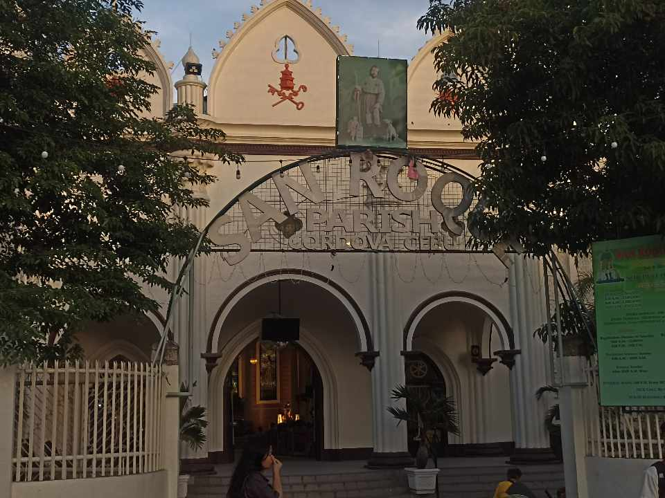
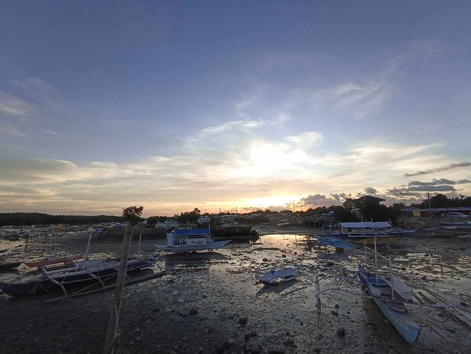
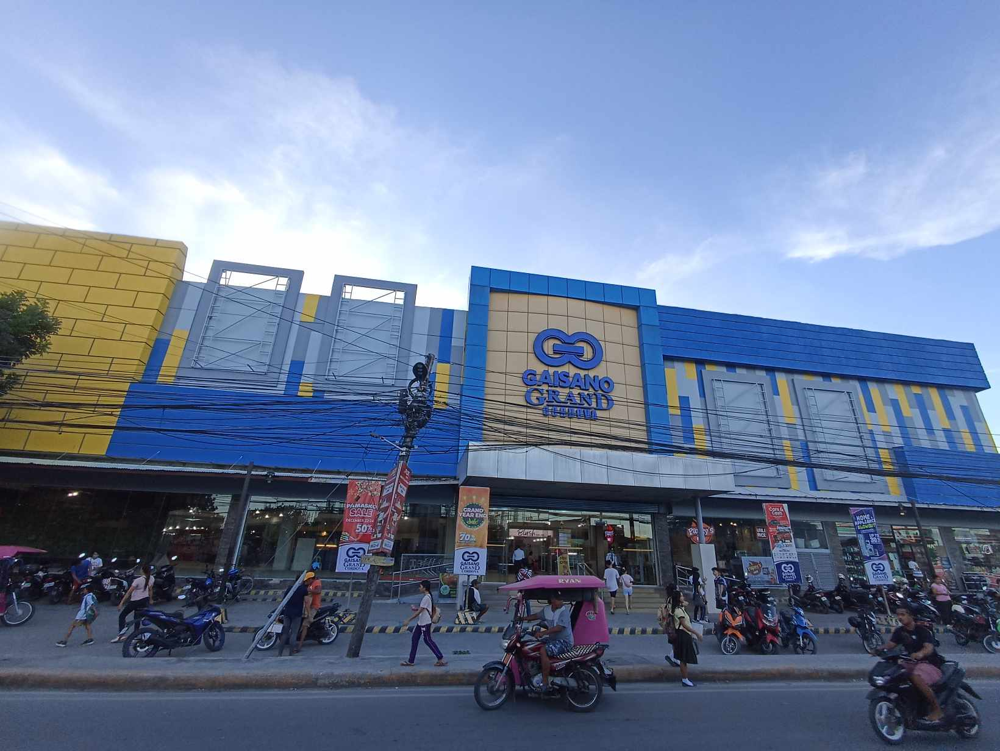
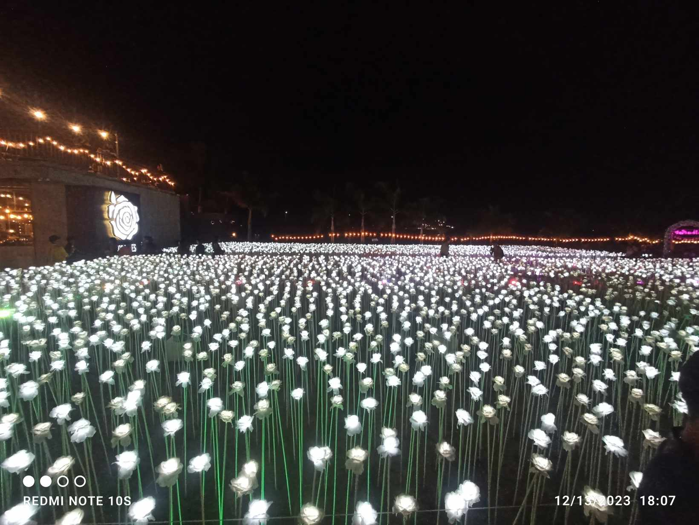

As you step into Cordova Park, you're greeted by lush greenery, well-maintained gardens, and peaceful pathways. Towering trees provide shade, creating a relaxing ambiance ideal for leisurely walks or quiet moments of contemplation. The park's well-manicured lawns invite families and friends to gather for picnics or simply unwind amidst nature's embrace.
BALAY LUNGSOD
Discovering the Charms of Balay Lungsod in Cordova: A Hidden Gem
Nestled in the heart of Cordova, a quaint town in the Philippines, lies the enchanting Balay Lungsod. This hidden gem holds within its walls stories of the past, culture, and a serene ambiance that captivates the soul of every visitor.
SAN ROQUE PARISH CHURCH

The San Roque Parish Church in Cordova, Philippines, stands as a testament to both religious devotion and architectural beauty. Nestled within the heart of this charming town, the church holds a significant place in the community, drawing locals and visitors alike to its serene embrace.
BANTAYAN BAY

The bay stretches along the northern shores of Cebu, offering visitors panoramic views of crystal-clear waters that glisten under the tropical sun. Its shores are adorned with powdery white sands that invite you to bask in the warmth of the sun or take leisurely strolls along the coastline.
GAISANO CORDOVA

As you step inside Gaisano Grand Mall Cordova, you'll find a bustling environment filled with a variety of stores and boutiques. From fashion and accessories to household items and electronics, the mall provides a comprehensive shopping experience, catering to diverse tastes and preferences. Visitors can explore a mix of local brands and well-known international labels, making it a convenient spot for both everyday needs and indulgent shopping sprees.
1OK ROSES

10,000 Roses has become an icon for visitors seeking the perfect backdrop for capturing timeless moments. The play of lights against the flowers offers photographers and visitors alike a canvas for creating unforgettable memories, making it a hotspot for picture-perfect moments shared with loved ones.